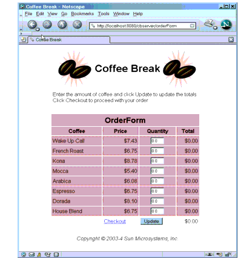
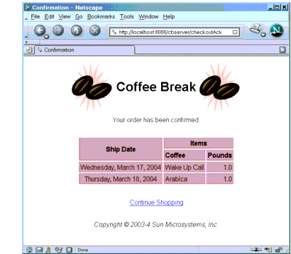

Building, Packaging, Deploying, and Running the Application
The source code for the Coffee Break application is located in the directory
<INSTALL>/j2eetutorial14/examples/cb/. Within thecbdirectory are subdirectories for each web application--saaj,jaxrpc,server, andserver-jsf--and a directory,common, for classes shared by the web applications. Each subdirectory contains abuild.xmlandbuild.propertiesfile. The web application subdirectories in turn contain asrcsubdirectory for Java classes and awebsubdirectory for web resources.Setting the Port
The JAX-RPC and SAAJ services in the Coffee Break application run at the port that you specified when you installed the Application Server. The tutorial examples assume that the Application Server runs on the default port, 8080. If you have changed the port, you must update the port number in the following files before building and running the examples:
Setting the Registry Properties
The Coffee Break servers use a registry to obtain information about the JAX-RPC service endpoint. Since the Application Server does not include a registry, you must use an external registry. See Preliminaries: Getting Access to a Registry for information on registering with a public UDDI registry. If you previously ran the JAXR examples, you can use the same registry.
Before you build the Coffee Break application, you need to set properties in much the same way you did with the JAXR examples:
- Open the file
<INSTALL>/j2eetutorial14/examples/cb/common/src/com/sun/cb/CoffeeBreak.propertiesin an editor.- Edit the following lines to specify the registry you wish to access. For the
query.urland thepublish.urlassignments, comment out all but the registry you wish to access. The default is the IBM registry.
## IBM:
query.url=http://uddi.ibm.com/testregistry/inquiryapi
publish.url=https://uddi.ibm.com/testregistry/publishapi
## Microsoft:
#query.url=http://test.uddi.microsoft.com/inquire
#publish.url=https://test.uddi.microsoft.com/publish- Edit the following lines to specify the user name and password you obtained when you registered with the registry.
## Specify user name and password
registry.username=
registry.password=- Edit the following lines, which contain empty strings for the proxy hosts, to specify your own proxy settings. The proxy host is the system on your network through which you access the Internet; you usually specify it in your Internet browser settings.
## HTTP and HTTPS proxy host and port
http.proxyHost=
http.proxyPort=8080
https.proxyHost=
https.proxyPort=8080The proxy ports have the value 8080, which is the usual one; change this string if your proxy uses a different port.
Your entries usually follow this pattern:
http.proxyHost=proxyhost.mydomain
http.proxyPort=8080
https.proxyHost=proxyhost.mydomain
https.proxyPort=8080Using the Provided WARs
The instructions that follow for packaging and deploying the Coffee Break web applications assume that you are familiar with the deploytool procedures for packaging web services and presentation-oriented web applications described in previous chapters of the tutorial. If after following these procedures you have trouble deploying or running the application, you can compare your WAR files to the WAR files provided in
<INSTALL>/j2eetutorial14/examples/cb/provided-wars/. You cannot deploy the WAR files in this directory, because they use the unedited version of the<INSTALL>/j2eetutorial14/examples/cb/common/src/com/sun/cb/CoffeeBreak.propertiesfile.Building the Common Classes
The Coffee Break applications share a number of common utility classes. To build the common classes and copy the
CoffeeBreak.propertiesfile into thebuilddirectory, do the following:Building, Packaging, and Deploying the JAX-RPC Service
To build the JAX-RPC service and client library and to package and deploy the JAX-RPC service, follow these steps:
- In a terminal window, go to
<INSTALL>/j2eetutorial14/examples/cb/jaxrpc/.- Run
asant build-registryandasantbuild-service. These tasks create the JAR file containing the JAXR routines and runwscompileand compile the source files of the JAX-RPC service.If you get an error, make sure that you edited the file
<INSTALL>/j2eetutorial14/examples/common/build.propertiesas described in Building the Examples.- Make sure the Application Server is running.
To package and deploy the JAX-RPC service using
asant, follow these steps:
- Run
asantcreate-war.- If you did not do so in Chapter 10, follow the instructions in Creating JAXR Resources to create a JAXR connection factory named
eis/JAXR.- Run
asantdeploy-war.To package and deploy the JAX-RPC service using
deploytool, follow these steps:
- Start
deploytool.- Select File from the
deploytoolmenu, then New, then Web Component. Use the New Web Component wizard to create a stand-alone web module namedjaxrpc-coffee-supplierin<INSTALL>/j2eetutorial14/examples/cb/jaxrpc/.- Set the context root to
/jaxrpc-coffee-supplier.- Add the content to the service.
- Add the
compackage,Supplier.wsdl, andmapping.xmlunder<INSTALL>/j2eetutorial14/examples/cb/jaxrpc/build/server/to the module.- Navigate to
<INSTALL>/j2eetutorial14/examples/cb/jaxrpc/dist/and addregistry-org.jar.- In the web module contents editor, drag the
comdirectory (containingsun/cb/SupplierPrices.propertiesandsun/cb/CoffeeBreak.properties) from the context root toWEB-INF/classes/.- Click Next.
- Specify Web Services Endpoint as the component type.
- In the Choose Service dialog box (Define New Service):
- In the Component General Properties dialog box:
- In the Web Service Endpoint dialog box:
- Add the alias
/jaxrpcto theSupplierImplweb component.- Select the Endpoint tab, and then select
jaxrpcfrom the Endpoint Address combo box in the Sun-specific Settings area.- Select the
jaxrpc-coffee-suppliermodule and add an event listener that references the listener classcom.sun.cb.ContextListener.- Add a resource reference of type
javax.xml.registry.ConnectionFactorynamedeis/JAXRmapped to the JAXR connection factoryeis/JAXR. Specifyj2eeas the value for both the user name and the password. If you have not already created the connection factory, follow the instructions in Creating JAXR Resources.- Save the module.
- Deploy the module.
You will find the
orgkey.txtfile in the<J2EE_HOME>/domains/domain1/configdirectory. Check the server log for errors:<J2EE_HOME>/domains/domain1/logs/server.log.Next, build and test the client:
- Run
asantbuild-client. This task creates the JAR file that contains the classes needed by JAX-RPC clients. Thebuild-clienttask runswscompileto generate the stubs and JavaBeans components.- Test that the JAX-RPC service has been deployed correctly by running the test programs
asant run-test-orderandasantrun-test-price.Here is what you should see when you run
asantrun-test-price:
run-test-price:
run-test-client:
[java]http://localhost:8080/jaxrpc-coffee-supplier/jaxrpc
[java] 11/11/04 12/11/04
[java] Wake Up Call 5.50
[java] French Roast 5.00
[java] Kona 6.50
[java] Mocca 4.00Building, Packaging, and Deploying the SAAJ Service
To build the SAAJ service and client library, follow these steps:
To package and deploy the SAAJ service using
asant, follow these steps:To package and deploy the SAAJ service using
deploytool, follow these steps:
- Start
deploytool.- Create a stand-alone web module called
saaj-coffee-supplierin<INSTALL>/j2eetutorial14/examples/cb/saaj/.- Set the context root to
/saaj-coffee-supplier.- Add the
comdirectory under<INSTALL>/j2eetutorial14/examples/cb/saaj/build/server/to the module.- Add the
ConfirmationServletweb component. Choose the Servlet component type.- Add the alias
/orderCoffeeto theConfirmationServletweb component.- Add the
PriceListServletweb component to the existingsaaj-coffee-supplierWAR.- Add the alias
/getPriceListto thePriceListServletweb component.- Save the module.
- Deploy the module.
Test that the SAAJ service has been deployed correctly by running one or both of the test programs
asantrun-test-priceandasantrun-test-order.Building, Packaging, and Deploying the Coffee Break Server
To build the Coffee Break server:
To package and deploy the Coffee Break server using
asant, follow these steps:To package and deploy the Coffee Break server using
deploytool, follow these steps:
- Start
deploytool.- Create a stand-alone web module called
cbserverin<INSTALL>/j2eetutorial14/examples/cb/server/.- Set the context root to
/cbserver.- Add the content to the web module.
- Add all the JSP pages,
tutorial-template.tld, and thetemplateandcomdirectories under<INSTALL>/j2eetutorial14/examples/cb/server/build/to the module.- In the web module contents editor, drag the
comdirectory (containingsun/cb/CoffeeBreak.properties) from the context root toWEB-INF/classes/.- Add the JAX-RPC client library in
<INSTALL>/j2eetutorial14/examples/cb/jaxrpc/dist/jaxrpc-client.jarto the module.- Add the SAAJ client library in
<INSTALL>/j2eetutorial14/examples/cb/saaj/dist/saaj-client.jarto the module.- Create a
Dispatcherweb component. Choose the Servlet component type.- Add the aliases
/orderForm,/checkoutForm, and/checkoutAckto theDispatchercomponent.- Add the
RetailPriceListServletweb component to the existingcbserverWAR.- Add the alias
/loadPriceListto theRetailPriceListServletcomponent.- Add a resource reference of type
javax.xml.registry.ConnectionFactorynamedeis/JAXRmapped to the JAXR connection factoryeis/JAXR, with the user name and password bothj2ee.- Add a JSP property group named
cbserver. The property group applies to the URL pattern*.jsp. Add the include prelude/template/prelude.jspf.- Add a context parameter named
javax.servlet.jsp.jstl.fmt.localizationContextand valuecom.sun.cb.messages.CBMessages.- Specify a security constraint for the
cbserverWAR.
- Select Basic as the User Authentication Method.
- Click Settings and enter
filein the Realm Name field. Click OK.- Add a security constraint and a web resource collection. Use the default names provided by
deploytool.- Add the URL
/loadPriceListto the web resource collection.- Select the
GETHTTP method.- Add the security role
admin.- Save the module.
- Deploy the module.
Building, Packaging, and Deploying the JavaServer Faces Technology Coffee Break Server
To build the JavaServer Faces technology version of the Coffee Break server, follow these steps:
To package and deploy the JavaServer Faces technology version of the Coffee Break server using
asant, follow these steps:To package and deploy the JavaServer Faces technology version of the Coffee Break server using
deploytool, follow these steps:
- Start
deploytool.- Create a stand-alone web module called
cbserver-jsf in <INSTALL>/j2eetutorial14/examples/cb/server-jsf/.- Set the context root to
/cbserver-jsf.- Add the content to the web module.
- Add all the JSP pages,
coffeebreak.css,faces-config.xml,index.html, and thetemplateandcomdirectories under<INSTALL>/j2eetutorial14/examples/cb/server-jsf/build/to the module.- In the web module contents editor, drag the
comdirectory (containingsun/cb/CoffeeBreak.properties) from the context root toWEB-INF/classes.- Drag
faces-config.xmlto the root of theWEB-INFdirectory.- Add the JAX-RPC client library in
<INSTALL>/j2eetutorial14/examples/cb/jaxrpc/dist/jaxrpc-client.jarto the module.- Add the SAAJ client library in
<INSTALL>/j2eetutorial14/examples/cb/saaj/dist/saaj-client.jarto the module.- Add the file
<J2EE_HOME>lib/jsf-api.jarto the module.- Create a
FacesServletweb component. Choose the Servlet component type.- Add the aliases
/faces/*and*.jsfto theFacesServletcomponent.- Add a resource reference of type
javax.xml.registry.ConnectionFactorynamedeis/JAXRmapped to the JAXR connection factoryeis/JAXR, with the user name and password bothj2ee.- Add a JSP property group named
cbserver-jsf. The property group applies to the URL pattern*.jsp. Add the include prelude/template/prelude.jspf.- Save the module.
- Deploy the module.
Running the Coffee Break Client
After you have installed all the web applications, check that all the applications are running in deploytool or the Admin Console. You should see
cbserver(orcbserver-jsf),jaxrpc-coffee-supplier, andsaaj-coffee-supplierin the list of applications.If you have installed the non-GUI framework version of the Coffee Break server, you can run the Coffee Break client by opening the Coffee Break server URL in a web browser:
If you have installed the JavaServer Faces technology version of the Coffee Break server, you can run the JavaServer Faces version of the Coffee Break client by opening this URL in a web browser:
You should see a page something like the one shown in Figure 35-2.

After you have gone through the application screens, you will get an order confirmation that looks like the one shown in Figure 35-3.

Figure 35-3 Order Confirmation
Removing the Coffee Break Application
To remove the Coffee Break application, perform the following steps:
If you want to remove the
buildanddistdirectories, runasantcleanin each directory, including<INSTALL>/j2eetutorial14/examples/cb/common/.
All of the material in The J2EE(TM) 1.4 Tutorial is copyright-protected and may not be published in other works without express written permission from Sun Microsystems.